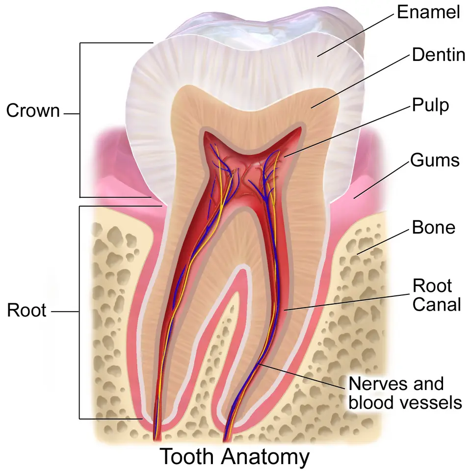
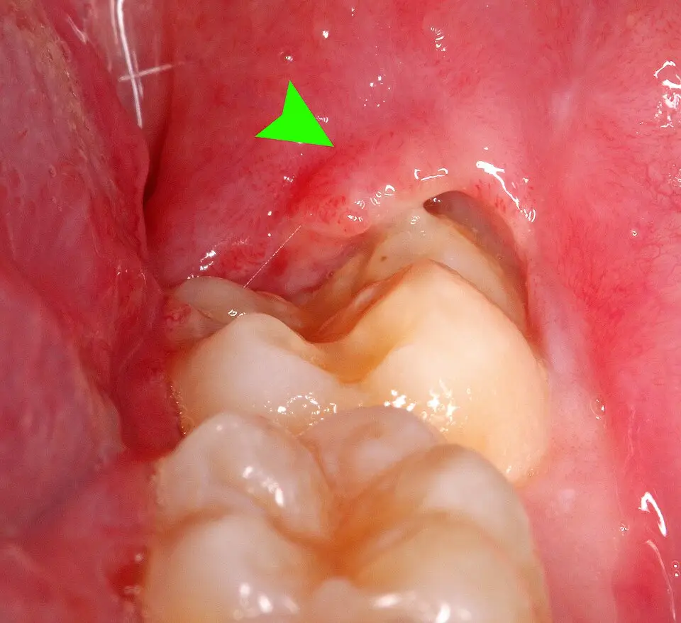
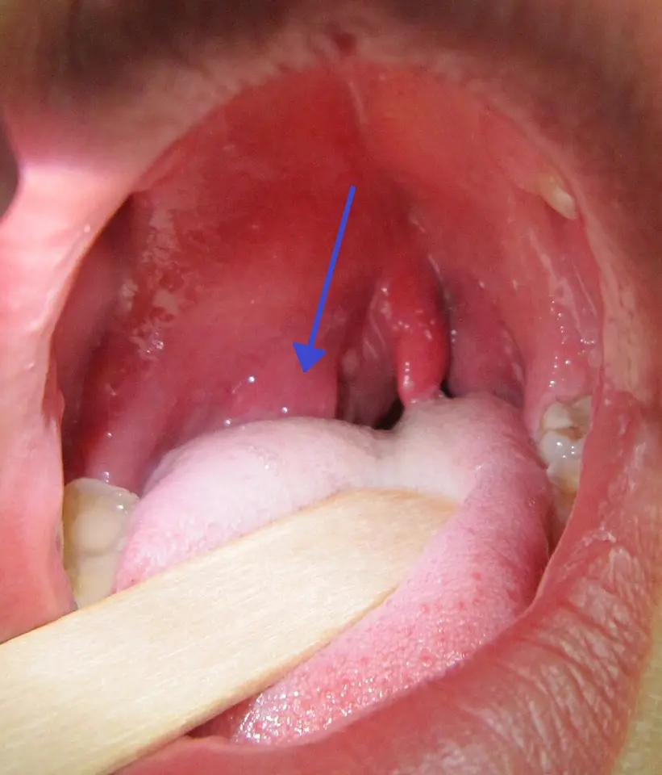

LOT_027 — S1.11 Face, mâchoire et dents — Phase A : monographie du SSP et dix diagnostics différentiels
Une douleur de la face, de la mâchoire ou d’une dent vient le plus souvent d’une pulpite ou d’un abcès dentaire, qui dominent les urgences dentaires universitaires de ZurichS5. Le médecin exclut pourtant d’abord trois urgences, car elles menacent la vie ou la vueS13S17S3. Il s’agit de l’abcès périamygdalien (E1), de l’artérite à cellules géantes (E2) après 50 ans et de l’abcès dentaire extensif (E3)S13S17S3. Il localise ensuite la douleur à une dent, à l’articulation, au sinus ou à un nerf, puis il choisit le seul examen qui trancheS2S7S10S16.
Contenu établi à partir des sources citées ; non validé cliniquement par un médecin.
1. Définition
La situation clinique de départ S1.11 du catalogue PROFILES 2023 réunit la douleur faciale, la douleur de la mâchoire, la douleur dentaire et le trismusS1. La douleur faciale siège entre le front et le menton, tandis que la douleur dentaire est rapportée par le patient à une ou plusieurs dentsS1S2. Le trismus désigne une limitation de l’ouverture buccale par contracture des muscles masticateurs, qui empêche d’écarter les arcades dentairesS13S4.
2. Épidémiologie (Suisse, puis Europe)
La policlinique de chirurgie orale de l’Université de Zurich traite 100 à 150 urgences par semaine, surtout des pulpites et des abcèsS5. Près des deux tiers de ces patients n’ont pas de médecin-dentiste attitré ou ne l’ont plus consulté depuis longtemps, d’où des urgences en grande partie évitablesS5. En Finlande, la douleur dentaire du dernier mois touchait 7 % des adultes de 25 à 64 ans en 1990, puis 12 % en 2014S6.
Les indicateurs de fréquence fondent l’ordre gelé des dix diagnostics, tandis que la gravité ajoute trois rangs d’exclusion, E1 à E3. Ces indicateurs mêlent prévalences de lésions, incidences et séries hospitalières, si bien que les limites des données rendent l’ordre indicatifS8S11S14.
Fréquence et gravité : pourquoi cet ordre
| Rang | Diagnostic | Donnée de fréquence | Source |
|---|---|---|---|
| DX.1 | Pulpite dentaire | La pulpite domine, avec l’abcès, les 100 à 150 urgences hebdomadaires de Zurich ; la douleur dentaire du mois touche 12 % des adultes finlandais. | S5S6 |
| DX.2 🚩 E3 | Abcès dentoalvéolaire | L’abcès partage avec la pulpite la tête des urgences zurichoises et augmente en début d’année. | S5 |
| DX.3 | Trouble temporo-mandibulaire douloureux | Un trouble articulaire temporo-mandibulaire touche 31,1 % des adultes examinés selon les critères diagnostiques de recherche. | S8 |
| DX.4 | Sinusite maxillaire aiguë | 4e rang : la rhinosinusite aiguë complique un rhume, affection très courante ; aucune incidence suisse n’a été lue. | S9 |
| DX.5 | Péricoronarite | 5e rang : elle touche une dent partiellement sortie, surtout la troisième molaire ; aucune incidence européenne n’a été lue. | S4 |
| DX.6 | Fracture mandibulaire | La mandibule est le deuxième site de fracture faciale aux urgences et représente 45 % des fractures faciales dans une grande série. | S11 |
| DX.7 🚩 E1 | Abcès périamygdalien | Il survient chez 21,8 personnes pour 100 000 par an à Aarhus, avant la pandémie. | S14 |
| DX.8 | Névralgie du trijumeau | Environ 10 personnes sur 100 000 en sont atteintes chaque année, selon l’Inselspital de Berne. | S15 |
| DX.9 🚩 E2 | Artérite à cellules géantes | L’incidence française atteint environ 10 cas pour 100 000 habitants de plus de 50 ans. | S17 |
| DX.10 | Luxation mandibulaire | Elle reste une présentation peu fréquente aux urgences, bilatérale et antérieure dans 90 % des cas. | S11 |
Le rang de fréquence fixe l’ordre de lecture, tandis que le rang E fixe l’ordre d’exclusion au lit du maladeS13S17. L’abcès périamygdalien ouvre donc l’arbre décisionnel, bien qu’il n’occupe que le septième rang de fréquence.
Limites des chiffres
- La prévalence de 31,1 % compte des troubles articulaires découverts à l’examen, dont beaucoup restent indolores ; elle ne mesure donc pas les consultations pour douleurS8.
- Le chiffre finlandais mesure une douleur dentaire déclarée, et non un diagnostic de pulpite posé par un dentisteS6.
- L’incidence danoise de l’abcès périamygdalien est montée à 26,9 pour 100 000 après la levée des mesures sanitairesS14.
- Une revue de la Revue Médicale Suisse cite une incidence annuelle de 30 pour 100 000 habitants aux États-Unis pour le même abcèsS13.
- L’incidence de l’artérite à cellules géantes est 2 à 5 fois plus élevée en Europe du Nord qu’en Europe du Sud, ce qui limite la transposition du chiffre français à la SuisseS17.
- Les rangs 4 et 5 reposent sur un argument clinique sourcé, faute de chiffre suisse ou européen lu pour la sinusite et la péricoronarite.
Le terrain sépare nettement les diagnostics, ce qui oriente dès l’accueilS13S15S17S11. L’abcès périamygdalien touche surtout l’adolescent et l’adulte jeune, tandis que la névralgie du trijumeau culmine entre 70 et 80 ans avec 1,8 femme pour un hommeS13S15. L’artérite à cellules géantes survient après 50 ans, vers 70 ans en moyenne, avec trois femmes pour un hommeS17. La fracture mandibulaire suit surtout une agression, une chute ou un accident de la route, et elle s’accompagne d’une perte de connaissance constatée dans près d’un cas sur cinqS11.
Chez l’enfant de 15 ans ou moins, l’étude européenne EURMAT (European Maxillofacial Trauma) compte 114 fractures faciales sur 3 396 patients, soit 3,3 %S12. La chute y domine les causes, et la mandibule, surtout le condyle, reste le site de fracture le plus fréquentS12. Le tétanos, cause rare mais mortelle de trismus, ne donne plus qu’un à deux cas déclarés par an à l’Office fédéral de la santé publique (OFSP)S19.
3. Physiopathologie
La sensibilité de la face, des dents et des mâchoires passe par les trois branches du nerf trijumeau, ce qui explique les douleurs projetées d’une région à l’autreS15. La douleur dentaire peut ainsi venir d’un nerf, d’un sinus ou de l’articulation, car ces structures partagent la même voie sensitive ; c’est une déduction anatomique.
Base à connaître : les trois territoires du trijumeau
Territoires sensitifs des trois branches du trijumeau. Illustration médicale en couleurs, tête de profil droit ; vert pour le territoire ophtalmique (V1), rose pour le maxillaire (V2), violet pour le mandibulaire (V3).

Lisez d'abord seul ce cliché (territoires sensitifs des trois branches du trijumeau) : cherchez vous-même le signe.
La copie annotée (territoires sensitifs des trois branches du trijumeau) numérote les repères décrits ci-dessous.
- 1. Le ganglion trigéminal réunit les trois branches avant leur entrée dans le tronc cérébral.
- 2. Le territoire ophtalmique V1 couvre le front et l’œil ; il est rarement atteint seul par la névralgie.
- 3. Le territoire maxillaire V2 couvre la joue, la lèvre supérieure et les dents du haut.
- 4. Le territoire mandibulaire V3 couvre le menton, la lèvre inférieure et les dents du bas ; il porte aussi la commande des muscles masticateurs.
- Une douleur qui déborde ces territoires, ou qui touche l’angle de la mâchoire innervé par le plexus cervical, ne relève pas d’une névralgie trigéminale.
- Une hypoesthésie dans un territoire oriente vers une névralgie secondaire et impose l’imagerie par résonance magnétique (IRM).
Ce que l'image décide. Le territoire douloureux, V2 ou V3 le plus souvent, oriente l’examen vers les dents correspondantes, puis vers l’IRM si aucune cause dentaire n’explique la décharge.

Le trijumeau, cinquième nerf crânien, assure la sensibilité du visage et commande en partie les muscles masticateursS15. La névralgie touche le plus souvent les territoires maxillaire et mandibulaire, ce qui explique sa confusion fréquente avec une douleur dentaireS15.
Dans la dent, la pulpe enflammée gonfle dans une chambre rigide, si bien que la douleur devient spontanée, pulsatile et nocturne lorsque l’inflammation devient irréversibleS2. La nécrose pulpaire laisse ensuite les bactéries franchir l’apex, puis l’os alvéolaire, ce qui forme l’abcès dentoalvéolaireS3. Lorsque l’infection gagne les espaces profonds du plancher buccal, elle menace les voies aériennes, comme dans l’angine de LudwigS3.
Base à connaître : dent, pulpe et os alvéolaire
Anatomie de la dent et du parodonte. Illustration médicale en couleurs, coupe longitudinale d’une molaire dans son alvéole.

Lisez d'abord seul ce cliché (anatomie de la dent et du parodonte) : cherchez vous-même le signe.
La copie annotée (anatomie de la dent et du parodonte) numérote les repères décrits ci-dessous.
- 1. L’émail recouvre la couronne et ne contient aucun nerf.
- 2. La pulpe contient nerfs et vaisseaux dans une chambre inextensible, ce qui explique la douleur pulsatile de la pulpite.
- 3. L’apex laisse passer le paquet vasculo-nerveux ; une nécrose pulpaire y conduit l’infection vers l’os.
- 4. L’os alvéolaire entoure la racine ; l’abcès y progresse avant de franchir la corticale.
- Une douleur dentaire peut venir d’un sinus ou du cœur, car ces structures partagent des voies sensitives.
- Une dent nécrosée peut ne plus réagir au froid, ce qui ne signifie pas qu’elle est saine.
Ce que l'image décide. La structure atteinte fixe le geste : soin de la pulpe pour la pulpite, drainage par la dent ou la gencive pour l’abcès apical.

Les mécanismes des dix diagnostics se répartissent entre infection, articulation, traumatisme, nerf et vascularite, et chacun appelle un examen et un traitement propres.
Corrélation : mécanisme, examen qui le montre, traitement qui le corrige
| Perturbation | Ce qui la montre | Ce qui la corrige |
|---|---|---|
| La pulpe s’enflamme sous une carie, de façon réversible puis irréversible. | Le test au froid exagère la douleur dans la forme réversible, et la douleur nocturne signe la forme irréversible. | Le dentiste obture la carie, ou il dévitalise la dent, ou il l’extraitS2. |
| Le pus collecté sous l’apex distend l’os et le périoste. | La dent est sensible à la percussion, et la tuméfaction gingivale ou faciale traduit l’extension. | Le drainage et la suppression de la cause guérissent ; l’antibiotique ne sert qu’en cas d’extensionS3. |
| L’opercule qui recouvre une dent partiellement sortie retient débris et bactéries. | L’examen voit un capuchon rouge et du pus autour de la dent de sagesse. | L’irrigation sous l’opercule et le détartrage soulagent, et l’extraction prévient les récidivesS4. |
| Le ménisque se déplace ou la musculature masticatrice se contracture. | La palpation reproduit la douleur, et le scanner ou l’IRM (imagerie par résonance magnétique) montrent la lésion interne. | La physiothérapie spécialisée et la gouttière dentaire forment le traitement de première ligneS7. |
| L’ostium du sinus maxillaire se bouche au cours d’un rhume, puis le mucus se surinfecte parfois. | La clinique suffit ; la tomodensitométrie (TDM) injectée ne sert qu’aux complications. | Les soins nasaux suffisent souvent, et l’amoxicilline n’est indiquée que selon les critères de la SSI (Société suisse d’infectiologie)S9S10. |
| Un vaisseau comprime la racine du trijumeau et use sa gaine de myéline. | L’IRM en trois séquences de haute résolution montre le contact neurovasculaire. | La carbamazépine bloque les décharges, et la décompression microvasculaire écarte le vaisseauS15S16. |
| Une vascularite granulomateuse épaissit la paroi des branches de la carotide externe. | L’écho-Doppler montre le halo, et la biopsie d’artère temporale montre l’infiltrat. | La prednisone réduit l’inflammation et protège la vueS17. |
Le trismus naît de l’inflammation ou du spasme des muscles masticateurs voisins d’un foyer infectieux, ce qui explique sa présence dans l’abcès périamygdalien et la péricoronariteS13S4. Dans la luxation mandibulaire, le condyle sort en avant de la fosse mandibulaire, puis le spasme du masséter et des ptérygoïdiens le bloque, si bien que la bouche reste ouverteS11. Dans la fracture bilatérale du corps mandibulaire, le segment libre perd l’appui antérieur de la langue, qui bascule en arrière et obstrue les voies aériennesS11.
4. Démarche diagnostique
Le médecin vérifie d’abord la respiration, la déglutition et la vision, car ces trois fonctions décident de l’urgence avant toute recherche de dent responsableS3S13S17. Les urgences à exclure suivent l’ordre E1, E2 puis E3, et chacune impose un geste précis dans un délai précis.
Urgences à exclure d’abord : E1, E2, E3, puis hors liste
| Rang | Signe qui alerte | Piège | Conduite si positif |
|---|---|---|---|
| 🚩 E1 Abcès périamygdalien | Une odynodysphagie sévère et latéralisée s’associe à un voile bombé, une luette déviée, un trismus et une voix de « patate chaude ». | Le trismus est rare chez l’enfant, et le phlegmon donne le même tableau sans pus. | L’ORL (oto-rhino-laryngologiste) ponctionne le voile le jour même ; si la ponction est négative ou le trismus sévère, il demande une TDM cervicale injectéeS13. |
| 🚩 E2 Artérite à cellules géantes | Après 50 ans, une céphalée récente s’associe à une claudication de la mâchoire, à une hyperesthésie du cuir chevelu ou à un trouble visuel. | Un trouble visuel transitoire laisse souvent un fond d’œil normal, qui ne doit pas rassurer. | Le médecin débute la prednisone sans attendre la biopsie et organise l’avis ophtalmologiqueS17. |
| 🚩 E3 Abcès dentaire extensif | Un trismus important, un plancher buccal gonflé, une dyspnée, une dysphagie ou une cellulite rapide apparaissent. | L’absence de fièvre n’exclut pas une infection qui s’étend. | Le médecin transfère en urgence à l’hôpital ; si les voies aériennes ou l’état général sont menacés, il appelle le 144S3. |
| Hors liste : syndrome coronarien | Une douleur thoracique irradie vers la mâchoire inférieure, avec pâleur, sueurs ou nausées. | La douleur mandibulaire isolée d’effort peut être prise pour une douleur dentaire ; c’est une déduction du trajet décrit. | Le médecin appelle le 144 sans délaiS18. |
| Hors liste : tétanos | Des contractures douloureuses commencent par les muscles du visage 3 à 21 jours après une plaie. | Une plaie minime et ancienne suffit, car les spores sont partout dans l’environnement. | Le médecin hospitalise en soins intensifs, car la létalité de la forme généralisée atteint 20 à 50 %S19. |
Ce tri précède la recherche de la cause dentaire, car un examen dentaire ordinaire ne protège ni les voies aériennes ni la vueS3S17.
Après ce tri, le médecin localise la douleur à l’une des quatre origines : la dent et la gencive, l’articulation et les muscles, le sinus, ou le nerf et les artères. Il confronte enfin les diagnostics discriminants deux à deux, en suivant le raisonnement pas à pas qui sépare les causes fréquentes des causes graves.
Quatre origines, quatre questions
| Origine | Question qui oriente | Diagnostics | Examen qui tranche |
|---|---|---|---|
| La dent ou la gencive | La douleur est-elle réveillée par le froid, le chaud, la mastication ou la percussion d’une dent ? | Pulpite, abcès dentoalvéolaire, péricoronarite | Le dentiste réalise le test de sensibilité pulpaire, la percussion et la radiographie dentaireS2S3. |
| L’articulation et les muscles | La douleur varie-t-elle avec l’ouverture buccale, la mastication ou un traumatisme ? | Trouble temporo-mandibulaire, luxation, fracture | L’orthopantomogramme montre la fracture ou la luxation, tandis que le scanner ou l’IRM explorent l’articulationS11S7. |
| Le sinus | La douleur sous-orbitaire augmente-t-elle tête penchée en avant, au décours d’un rhume ? | Sinusite maxillaire aiguë | La clinique suffit ; la TDM injectée ne sert qu’en cas de complication suspectéeS10. |
| Le nerf ou les artères | La douleur est-elle une décharge de quelques secondes, ou une claudication de la mâchoire après 50 ans ? | Névralgie du trijumeau, artérite à cellules géantes | L’IRM en trois séquences explore le trijumeau, et l’écho-Doppler temporal cherche le haloS16S17. |
Raisonnement pas à pas : diagnostics discriminants
| Paire à séparer | Élément qui tranche | Piège | Conduite si positif |
|---|---|---|---|
| Pulpite contre abcès dentoalvéolaire | La pulpite réversible répond au froid sans douleur à la percussion ; l’abcès rend la dent sensible à la percussion et peut gonfler la gencive. | Une dent nécrosée ne répond plus au froid tout en restant infectée. | Le médecin prescrit l’antalgie sans antibiotique pour la pulpite, et il adresse au dentiste pour drainer l’abcèsS2S3. |
| Péricoronarite contre trouble temporo-mandibulaire | La péricoronarite montre un opercule enflammé ou du pus ; sans signe infectieux, la limitation d’ouverture oriente vers l’articulation. | Les deux donnent douleur et limitation d’ouverture chez l’adulte jeune. | Le dentiste irrigue l’opercule, ou il traite le trouble articulaire de façon conservatriceS4S7. |
| Abcès périamygdalien contre péricoronarite | L’abcès périamygdalien bombe le voile et dévie la luette, alors que la péricoronarite reste rétromolaire. | Les deux donnent trismus, fièvre et dysphagie. | L’ORL ponctionne le voile le jour même dans le premier casS13S4. |
| Névralgie du trijumeau contre pulpite | La névralgie donne des décharges de quelques secondes, déclenchées par le toucher ou le brossage, sans dent sensible au froid. | Beaucoup de patients subissent des soins dentaires inutiles avant le diagnostic. | Le médecin demande l’IRM et débute la carbamazépineS15S16. |
| Artérite à cellules géantes contre trouble temporo-mandibulaire | La claudication de la mâchoire survient à la mastication prolongée après 50 ans, avec CRP (protéine C réactive) élevée. | Elle passe pour une douleur articulaire banale chez la personne âgée. | Le médecin débute la prednisone le jour mêmeS17. |
| Luxation contre fracture | La bouche bloquée ouverte sans traumatisme oriente vers la luxation ; la malocclusion après un coup oriente vers la fracture. | Une luxation postérieure ou latérale s’associe à une fracture. | Le médecin demande un orthopantomogramme avant toute réductionS11. |
5. Anamnèse ciblée et drapeaux rouges
L’anamnèse caractérise la douleur par son siège, son type, sa durée, son horaire et ses déclencheurs, car ces cinq traits séparent la dent, l’articulation, le sinus et le nerfS2S10S15. La fenêtre chaque symptôme : typique ou non précise pour chaque diagnostic le profil attendu et ce qui doit faire douter.
Chaque symptôme : typique ou non, et pourquoi
| Diagnostic | Profil typique | Ce qui rend le profil atypique |
|---|---|---|
| Pulpite réversible | Une douleur brève, provoquée par le froid ou le sucré, cède à l’arrêt du stimulus. | Une douleur spontanée de plusieurs heures signe déjà la forme irréversibleS2. |
| Pulpite irréversible | Une douleur sourde et pulsatile dure plusieurs heures, réveille la nuit, s’aggrave au chaud et peut être soulagée par le froid. | Une dent qui ne répond plus du tout oriente vers une nécrose et un abcèsS2. |
| Abcès dentoalvéolaire | Une douleur continue rend la dent sensible au contact, puis la gencive ou la joue gonflent. | La fièvre au-dessus de 38 °C ou sous 36 °C signe une atteinte générale qui change la conduiteS3. |
| Péricoronarite | Une douleur bien localisée autour d’une dent partiellement sortie s’associe à un mauvais goût, une gêne à la déglutition et parfois une fièvre. | Une dyspnée, un stridor ou une voix étouffée imposent l’urgence hospitalièreS4. |
| Trouble temporo-mandibulaire | La douleur varie avec la mastication et l’ouverture buccale, et elle s’accompagne d’une modification de l’ouverture. | Une fièvre ou une tuméfaction oriente vers une cause infectieuseS7S4. |
| Sinusite maxillaire | La douleur sous-orbitaire augmente tête penchée en avant, parfois pulsatile, maximale en fin d’après-midi et la nuit. | Une céphalée rétro-orbitaire permanente vers le vertex oriente vers le sinus sphénoïdalS10. |
| Névralgie du trijumeau | Des décharges unilatérales de quelques secondes reviennent jusqu’à une centaine de fois par jour, sans douleur entre les crises. | Une douleur bilatérale ou un déficit sensitif orientent vers une forme secondaireS15S16. |
| Artérite à cellules géantes | La douleur de mâchoire apparaît en mâchant et cède au repos, comme une claudication, chez une personne de plus de 50 ans. | Une raideur matinale des épaules ou du cou s’y associe parfois et compte dans les critères de classificationS17. |
| Abcès périamygdalien | L’odynodysphagie s’aggrave et se latéralise, avec fièvre, otalgie réflexe et trismus. | Une angine qui persiste malgré l’antibiotique chez un fumeur doit faire rechercher une tumeurS13. |
| Fracture ou luxation | La douleur suit un coup latéral, une chute sur le menton ou un bâillement, puis la fermeture devient impossible ou l’occlusion change. | Un saignement de l’oreille après une chute sur le menton oriente vers une fracture du condyle et de l’os tympanalS11. |
Le médecin recherche ensuite les drapeaux rouges, et chacun impose une action immédiate qui ne dépend pas du diagnostic final. Il relève enfin le terrain : âge, tabagisme, immunodépression, anticoagulant, grossesse, soins dentaires réguliers et statut vaccinal contre le tétanosS13S3S5S19.
Drapeaux rouges : signification et action immédiate
| Drapeau rouge | Signification | Action immédiate |
|---|---|---|
| Une dyspnée, un stridor, une voix étouffée ou une salive non déglutie apparaissent. | L’infection ou le segment mandibulaire libre menace les voies aériennes. | Le médecin appelle le 144, installe le patient penché en avant et ne force pas l’ouvertureS3S11. |
| Le plancher buccal gonfle ou une cellulite progresse vite. | L’infection dentaire gagne les espaces profonds du cou. | Le médecin transfère à l’hôpital en urgenceS3. |
| Une baisse visuelle, une diplopie ou une amaurose surviennent après 50 ans. | Une neuropathie optique ischémique menace de cécité définitive. | Le médecin débute la corticothérapie et obtient l’avis ophtalmologique le jour mêmeS17. |
| Une claudication de la mâchoire apparaît après 50 ans. | Les branches de la carotide externe souffrent d’une vascularite. | Le médecin dose la CRP et la VS (vitesse de sédimentation), puis traite sans attendre la biopsieS17. |
| Un déficit sensitif du visage ou une douleur bilatérale accompagnent une névralgie. | Une sclérose en plaques ou une tumeur peuvent causer une névralgie secondaire. | Le médecin demande une IRMS16S15. |
| Une lèvre inférieure engourdie suit un traumatisme mandibulaire. | Le nerf alvéolaire inférieur est lésé au foramen mentonnier. | Le médecin documente l’atteinte et demande l’avis maxillo-facialS11. |
| Une perte de connaissance précède le traumatisme facial. | Un traumatisme crânien accompagne près d’une fracture mandibulaire sur cinq. | Le médecin évalue le crâne séparément selon les principes de prise en charge du traumatiséS11. |
| Une douleur de mâchoire s’accompagne de sueurs, de nausées ou d’une douleur thoracique. | Un infarctus du myocarde irradie vers la mâchoire inférieure. | Le médecin appelle le 144S18. |
6. Examen physique ciblé, région par région
L’examen suit l’ordre où il se réalise chez un patient qui souffre de la face : fonctions vitales d’abord, puis face, bouche, pharynx, artères et cou. Le médecin examine d’abord les voies aériennes, puis la face et l’articulation, les dents et l’oropharynx. Il termine par les artères temporales et par le cou et les nerfs de la face, car ces régions révèlent les causes graves.
Région 1 — Voies aériennes et état général
| Signe à rechercher | Comment le rechercher | Normal, puis pathologique | Valeur et piège |
|---|---|---|---|
| Le stridor et la voix | Le médecin écoute la respiration et fait parler le patient. | La voix reste claire ; une voix étouffée ou un stridor signent une obstruction haute. | Ces signes imposent le 144 avant tout examen de la boucheS4S3. |
| La déglutition | Il observe si la salive est avalée ou s’écoule. | La salive est avalée ; une salive qui s’écoule signe une dysphagie sévère. | Elle accompagne l’abcès profond et l’abcès périamygdalienS4S13. |
| La température | Il mesure la température. | Elle reste entre 36 et 38 °C ; au-delà de 38 °C ou sous 36 °C, l’infection devient générale. | L’absence de fièvre n’exclut pas une infection qui s’étendS3. |
| La position | Il observe si le patient se penche en avant. | Le patient se tient librement ; le traumatisé à mandibule instable se penche pour respirer. | Il ne faut jamais l’allonger sur le dos si la fracture est bilatéraleS11. |
Région 2 — Face et articulation temporo-mandibulaire
| Signe à rechercher | Comment le rechercher | Normal, puis pathologique | Valeur et piège |
|---|---|---|---|
| L’asymétrie | Le médecin regarde la face de face et la mandibule de profil. | La face est symétrique ; une mandibule déviée oriente vers une fracture déplacée ou une luxation unilatérale. | La bouche ouverte et bloquée signe la luxation bilatéraleS11. |
| La palpation osseuse | Il palpe le bord mandibulaire au doigt ganté, dehors et dedans. | Le bord est lisse ; une marche d’escalier ou une douleur exquise oriente vers une fracture. | La marche d’escalier fait partie de la règle de ManchesterS11. |
| La palpation articulaire | Il palpe l’articulation devant le tragus, ou avec l’auriculaire dans le conduit auditif. | L’articulation est indolore ; une douleur reproduite à la palpation oriente vers l’articulation. | Une fosse articulaire vide oriente vers une luxationS11S7. |
| L’ouverture buccale | Il fait ouvrir la bouche au maximum, sans jamais forcer. | L’ouverture est libre ; une limitation par contracture définit le trismus. | Forcer l’ouverture est dangereux en cas d’infection profondeS3S13. |
| L’occlusion | Il fait serrer les dents et demande si elles s’emboîtent comme d’habitude. | L’occlusion est habituelle ; une malocclusion oriente vers une fracture ou une luxation unilatérale. | Une malocclusion fait aussi partie de la règle de ManchesterS11. |
| Le test de l’abaisse-langue | Il fait mordre un abaisse-langue de chaque côté, puis il le tord. | Le patient retient l’abaisse-langue ; s’il le lâche, le test est positif. | Sa sensibilité atteint 95 %, avec un intervalle de confiance large, et il ne s’emploie qu’avec d’autres signesS11. |
Région 3 — Dents et gencives
| Signe à rechercher | Comment le rechercher | Normal, puis pathologique | Valeur et piège |
|---|---|---|---|
| La carie et la dent cassée | Le médecin éclaire la bouche et inspecte chaque arcade. | Les dents sont intactes ; une carie profonde oriente vers une pulpite, une dent cassée vers un traumatisme. | Une dent cassée appartient à la règle de ManchesterS2S11. |
| La sensibilité à la percussion | Il tapote la dent suspecte avec le manche d’un instrument. | La percussion est indolore ; une douleur oriente vers une atteinte au-delà de la pulpe. | La pulpite réversible ne rend pas la dent sensible à la percussionS2. |
| La tuméfaction gingivale | Il palpe la gencive et le vestibule en regard de la dent. | La gencive est ferme ; une voussure fluctuante signe un abcès. | Un abcès localisé se draine sans antibiotiqueS3. |
| L’opercule | Il inspecte la région de la troisième molaire inférieure. | La dent est sortie ; un capuchon rouge avec du pus signe une péricoronarite. | Sans signe infectieux, la douleur de cette région oriente vers l’articulationS4. |
| L’hématome sublingual et la plaie gingivale | Il soulève la langue et inspecte la gencive après un traumatisme. | Le plancher est intact ; un hématome sublingual oriente vers une fracture, une plaie gingivale vers une fracture ouverte. | La fracture ouverte appelle un antibiotique dès les urgencesS11. |
Péricoronarite de la troisième molaire inférieure gauche. Photographie intrabuccale, région rétromolaire inférieure gauche, dent 38 partiellement sortie.

Lisez d'abord seul ce cliché (péricoronarite de la troisième molaire inférieure gauche) : cherchez vous-même le signe.
La copie annotée (péricoronarite de la troisième molaire inférieure gauche) numérote les repères décrits ci-dessous.
- 1. Le capuchon de gencive, appelé opercule, recouvre en partie la dent de sagesse sous la flèche verte.
- 2. La muqueuse sous l’opercule est rouge et gonflée, et du pus sourd à son bord.
- 3. La couronne de la dent 38 n’a percé qu’en partie, ce qui crée une poche où les débris stagnent.
- Un trismus avec fièvre et voile bombé oriente vers un abcès périamygdalien, et non vers une simple péricoronarite.
- Un gonflement du plancher buccal signe une extension et impose une prise en charge hospitalière.
Ce que l'image décide. Une péricoronarite localisée relève d’une irrigation sous l’opercule et d’antalgiques chez le dentiste ; un trismus important ou une tuméfaction diffuse imposent l’hôpital.

Région 4 — Oropharynx
| Signe à rechercher | Comment le rechercher | Normal, puis pathologique | Valeur et piège |
|---|---|---|---|
| La symétrie du voile | Le médecin abaisse la langue et compare les deux piliers antérieurs. | Le voile est symétrique ; une tuméfaction érythémateuse unilatérale oriente vers un phlegmon ou un abcès. | Seule la ponction ou la TDM distingue l’abcès du phlegmonS13. |
| La luette | Il regarde la position de la luette. | La luette est médiane ; une déviation controlatérale signe l’abcès périamygdalien. | Un abcès rétropharyngé laisse les amygdales symétriquesS13. |
| Le pilier postérieur | Il examine le pilier postérieur. | Il est fin ; une tuméfaction oriente vers un abcès parapharyngé. | Cette atteinte relève de l’imagerie et de l’ORLS13. |
| L’écoulement postérieur | Il regarde la paroi pharyngée postérieure. | Elle est propre ; un écoulement purulent oriente vers une sinusite sphénoïdale. | Ce signe sépare la sinusite postérieure de la sinusite maxillaireS10. |
Abcès périamygdalien droit : voile bombé et luette déviée. Photographie clinique de l’oropharynx, bouche ouverte, abaisse-langue en place ; abcès du côté droit du patient, à gauche de l’image.

Lisez d'abord seul ce cliché (abcès périamygdalien droit : voile bombé et luette déviée) : cherchez vous-même le signe.
La copie annotée (abcès périamygdalien droit : voile bombé et luette déviée) numérote les repères décrits ci-dessous.
- 1. Le voile du palais bombe au-dessus de l’amygdale droite, car le pus refoule le pilier antérieur.
- 2. La luette est déviée vers le côté opposé, c’est-à-dire vers la gauche du patient.
- 3. L’hémipharynx gauche garde un relief normal et sert de témoin.
- Un phlegmon donne la même asymétrie sans pus, si bien que seule la ponction ou la TDM injectée tranche.
- Le trismus peut empêcher cet examen ; il impose alors la TDM cervicale injectée.
Ce que l'image décide. Cet aspect impose une ponction à l’aiguille du voile par l’ORL le jour même, puis un drainage si du pus revient.

Région 5 — Artères temporales, cuir chevelu et vision
| Signe à rechercher | Comment le rechercher | Normal, puis pathologique | Valeur et piège |
|---|---|---|---|
| Le pouls temporal | Le médecin palpe les deux artères temporales devant le tragus et sur la tempe. | Le pouls est battant et indolore ; un pouls diminué, une douleur ou un cordon induré sont anormaux. | Cette anomalie compte 2 points dans les critères de 2022 de l’ACR (American College of Rheumatology) et de l’EULAR (European League Against Rheumatism)S17. |
| L’hyperesthésie du cuir chevelu | Il demande si le peigne ou l’oreiller font mal, puis il palpe le cuir chevelu. | Le contact est indolore ; une douleur au contact oriente vers l’artérite. | Une nécrose du cuir chevelu, de la langue ou du voile est très évocatrice mais exceptionnelleS17. |
| L’acuité visuelle | Il mesure l’acuité de chaque œil et teste le champ visuel. | La vision est conservée ; une baisse brutale oriente vers une neuropathie optique ischémique. | Un épisode transitoire laisse souvent un examen normal, qui ne doit pas retarder le traitementS17. |
Région 6 — Cou et nerfs de la face
| Signe à rechercher | Comment le rechercher | Normal, puis pathologique | Valeur et piège |
|---|---|---|---|
| Les ganglions cervicaux | Le médecin palpe les aires sous-mandibulaires et jugulo-carotidiennes. | Elles sont souples ; un ganglion douloureux du même côté accompagne l’abcès. | L’atteinte ganglionnaire signe une infection dentaire qui s’étendS3S13. |
| La sensibilité du trijumeau | Il teste le toucher dans les territoires V1, V2 et V3, des deux côtés. | La sensibilité est symétrique ; une hypoesthésie oriente vers une névralgie secondaire. | Son absence n’exclut pas une forme secondaire, d’où l’IRM systématiqueS16. |
| La sensibilité de la lèvre inférieure | Il teste la lèvre inférieure et le menton après un traumatisme. | Elle est normale ; une anesthésie signe une lésion du nerf alvéolaire inférieur. | Le médecin doit la consigner avant tout gesteS11. |
| La zone gâchette | Il demande au patient de montrer, sans toucher, le point qui déclenche la crise. | Aucune zone ne déclenche de douleur ; un effleurement qui déclenche une décharge oriente vers la névralgie. | Toucher la zone provoque une crise inutile ; c’est une déduction de la description de l’InselspitalS15. |
| Le conduit auditif | Il inspecte le conduit après une chute sur le menton. | Il est sec ; un saignement oriente vers une fracture de l’os tympanal et du condyle. | Une fracture de la base du crâne ou une perforation tympanique saignent aussiS11. |
7. Approche syndromique
Les dix diagnostics se regroupent en cinq syndromes, et chaque syndrome appelle une conduite distincte avant même le diagnostic précis. Le syndrome infectieux oro-dentaire et le syndrome vasculaire ischémique priment, car ils exposent aux voies aériennes et à la cécitéS3S17.
Cinq syndromes, cinq conduites
| Syndrome | Signes fonctionnels | Signes physiques | Diagnostics |
|---|---|---|---|
| 7.1 Syndrome pulpo-dentaire | Une douleur dentaire provoquée ou spontanée réveille la nuit. | Une carie profonde s’accompagne d’une réponse anormale au froid. | Pulpite dentaireS2. |
| 7.2 Syndrome infectieux oro-cervical | Une douleur continue s’accompagne de fièvre, de dysphagie et de mauvais goût. | Une tuméfaction gingivale, rétromolaire ou péri-amygdalienne s’accompagne d’un trismus et d’un ganglion. | Abcès dentoalvéolaire, péricoronarite, abcès périamygdalienS3S4S13. |
| 7.3 Syndrome manducateur | La douleur varie avec la mastication, et l’ouverture se modifie. | La palpation articulaire reproduit la douleur, ou l’occlusion change. | Trouble temporo-mandibulaire, luxation, fractureS7S11. |
| 7.4 Syndrome rhinosinusien | Une douleur sous-orbitaire suit un rhume, avec obstruction et mouchage sale. | Un écoulement purulent apparaît, sans signe dentaire focal. | Sinusite maxillaire aiguëS9S10. |
| 7.5 Syndrome neuro-vasculaire | Des décharges brèves surviennent, ou une claudication de la mâchoire apparaît après 50 ans. | Une zone gâchette existe, ou l’artère temporale devient indurée. | Névralgie du trijumeau, artérite à cellules géantesS15S17. |
Le syndrome guide le premier geste : antalgie et dentiste pour 7.1, recherche d’extension pour 7.2, radiographie pour 7.3 après traumatisme, attente surveillée pour 7.4, IRM ou prednisone pour 7.5S2S3S11S10S16S17.
Le trismus, signe commun à plusieurs syndromes, reçoit sa définition et ses causes, car il impose de chercher une infection profonde avant une cause articulaire.
Le trismus : définition, recherche, mécanisme
- Le trismus est une limitation de l’ouverture buccale par contracture des muscles masticateurs, et le médecin le mesure sans forcer l’ouvertureS13.
- Dans l’abcès périamygdalien, l’inflammation et le spasme des muscles ptérygoïdiens et temporaux homolatéraux le provoquentS13.
- Le trismus est pathognomonique de l’abcès périamygdalien chez l’adulte, mais il reste rare chez l’enfantS13.
- Dans la péricoronarite, une ouverture limitée signe une infection qui s’étend et justifie un antibiotiqueS4.
- Dans la fracture mandibulaire, le trismus fait partie des cinq signes de la règle de ManchesterS11.
- Dans le tétanos, les contractures commencent par les muscles du visage, ce qui rend la vaccination de rappel décisiveS19.
8. Diagnostic positif et critères
Le diagnostic positif repose sur des critères propres à chaque diagnostic, et aucun critère unique ne couvre les dix causes de la situation cliniqueS2S10S16S17. Les critères des sociétés savantes fixent ce qui suffit et ce qui ne suffit pas, avec leur année.
Critères et seuils, avec ce qui suffit et ce qui ne suffit pas
| Diagnostic | Critère et source | Ce qui suffit | Ce qui ne suffit pas |
|---|---|---|---|
| Pulpite | Le SDCEP (Scottish Dental Clinical Effectiveness Programme) sépare la forme réversible, qui répond au froid sans douleur à la percussion, de la forme irréversible, spontanée et prolongée. | Le profil de douleur et le test de sensibilité pulpaire suffisent. | Une réponse au froid ne prouve pas que la pulpe est saineS2. |
| Sinusite bactérienne aiguë | La SSI retient l’absence d’amélioration après 10 jours ou plus, une fièvre d’au moins 39,0 °C avec mouchage purulent ou douleur faciale pendant 3 à 4 jours, ou une rechute après 5 à 6 jours d’amélioration. | Un seul de ces trois tableaux suffit à indiquer l’antibiotique. | Une douleur faciale pendant un rhume de moins de 10 jours ne suffit pasS10. |
| Névralgie du trijumeau | L’EAN (European Academy of Neurology, 2019) classe la névralgie en primaire, classique ou idiopathique, ou en secondaire. | La clinique typique suffit à évoquer la névralgie primaire. | La clinique ne suffit pas à exclure une forme secondaire, si bien que l’IRM s’imposeS16. |
| Artérite à cellules géantes | Les critères ACR/EULAR 2022 exigent un âge d’au moins 50 ans ; la biopsie positive ou le halo comptent 5 points, la perte de vision brutale 3 points, la claudication de la mâchoire 2 points. | Un score d’au moins 6 points classe l’artérite avec une sensibilité de 87 % et une spécificité de 95 %. | Ces critères servent à classer et non à diagnostiquer, une fois la vascularite établieS17. |
| Fracture mandibulaire | La règle de Manchester retient malocclusion, trismus, douleur bouche fermée, dent cassée et marche d’escalier. | Un seul des cinq signes justifie la radiographie, avec une sensibilité de 100 %. | L’absence des cinq signes rend la radiographie inutile, ce qui en évite 30 %S11. |
| Abcès périamygdalien | Le Service d’ORL du CHUV (Centre hospitalier universitaire vaudois) fonde le diagnostic sur une ponction à l’aiguille de la tuméfaction du voile. | Le pus à la ponction ou la collection à la TDM injectée suffisent. | Une ponction négative n’exclut pas un abcès postérieur ou inférieurS13. |
La synthèse des dix diagnostics tient dans un tableau comparatif de cinq colonnes, qui donne pour chacun le signe clé, l’examen qui tranche, le mécanisme, la conduite immédiate et le rang E. Les diagnostics hors liste restent à garder en tête, car certains tuent.
Les dix diagnostics retenus : tableau comparatif
| DX | Signe clé | Examen qui tranche | Mécanisme | Conduite immédiate | Rang E |
|---|---|---|---|---|---|
| DX.1 Pulpite dentaire | La douleur dentaire réveille la nuit ou suit le froid. | Le dentiste teste la sensibilité pulpaire. | La pulpe enflammée gonfle dans une chambre rigide. | Le médecin prescrit l’antalgie sans antibiotiqueS2. | Il n’a pas de rang E. |
| DX.2 Abcès dentoalvéolaire | La dent est sensible à la percussion et la gencive gonfle. | La radiographie dentaire montre la lésion apicale. | Le pus franchit l’apex vers l’os. | Le dentiste draine ; l’hôpital reçoit les formes extensivesS3. | 🚩 E3 |
| DX.3 Trouble temporo-mandibulaire douloureux | La douleur varie avec la mastication. | La clinique suffit ; le scanner ou l’IRM servent aux formes atypiques. | Le ménisque se déplace ou les muscles se contracturent. | Le médecin oriente vers la physiothérapie ou la gouttièreS7. | Il n’a pas de rang E. |
| DX.4 Sinusite maxillaire aiguë | La douleur sous-orbitaire augmente tête penchée. | La clinique suffit ; la TDM injectée sert aux complications. | L’ostium se bouche puis le mucus se surinfecte. | Le médecin surveille avant tout antibiotiqueS10. | Il n’a pas de rang E. |
| DX.5 Péricoronarite | Un opercule rouge entoure une dent de sagesse. | L’examen buccal suffit. | Les débris stagnent sous l’opercule. | Le dentiste irrigue l’operculeS4. | Il n’a pas de rang E. |
| DX.6 Fracture mandibulaire | Une malocclusion ou une marche d’escalier suivent un coup. | L’orthopantomogramme montre le trait. | L’anneau mandibulaire se rompt, souvent en deux points. | Le médecin protège les voies aériennes et appelle le maxillo-facialS11. | Il n’a pas de rang E. |
| DX.7 Abcès périamygdalien | Le voile bombe, la luette dévie et un trismus apparaît. | La ponction du voile ramène du pus. | Le pus s’accumule entre la capsule amygdalienne et le constricteur. | L’ORL draine le jour mêmeS13. | 🚩 E1 |
| DX.8 Névralgie du trijumeau | Des décharges de quelques secondes partent d’une zone gâchette. | L’IRM en trois séquences cherche une cause. | Un vaisseau irrite la racine du nerf. | Le médecin débute la carbamazépineS16S15. | Il n’a pas de rang E. |
| DX.9 Artérite à cellules géantes | Une claudication de la mâchoire apparaît après 50 ans. | L’écho-Doppler montre le halo, ou la biopsie montre l’infiltrat. | Une vascularite granulomateuse épaissit la paroi artérielle. | Le médecin débute la prednisone le jour mêmeS17. | 🚩 E2 |
| DX.10 Luxation mandibulaire | La bouche reste bloquée ouverte après un bâillement. | L’orthopantomogramme montre le condyle hors de la fosse. | Le spasme musculaire bloque le condyle en avant. | Le médecin réduit après radiographie, sous antalgie et sédationS11. | Il n’a pas de rang E. |
Diagnostics hors liste
- Le syndrome coronarien aigu irradie vers la mâchoire inférieure et impose le 144S18.
- Le tétanos commence par des contractures du visage et tue 20 à 50 % des formes généralisées dans les pays occidentauxS19.
- L’abcès rétropharyngé donne un torticolis sans trismus, avec des amygdales symétriques, et l’épiglottite évolue plus vite, surtout chez l’enfantS13.
- Une tumeur oropharyngée surinfectée peut imiter un abcès périamygdalien chez un fumeur ou un buveur régulierS13.
- La rhinosinusite chronique dure au moins trois mois et touche jusqu’à 15 % de la population, si bien qu’elle sort du cadre aigu de ce coursS9.
9. Examens complémentaires
9.a — Référence. Aucun examen unique ne sert de référence pour la situation clinique entière, car le diagnostic reste clinique pour la pulpite, la péricoronarite et la sinusite non compliquéeS2S4S10. La référence devient la biopsie d’artère temporale pour l’artérite, la ponction du voile pour l’abcès périamygdalien et l’IRM en trois séquences pour la névralgieS17S13S16.
9.b — Première intention. Le dentiste réalise le test pulpaire et la radiographie dentaire, tandis que le médecin demande l’orthopantomogramme après un traumatisme mandibulaireS2S11. Devant une claudication de la mâchoire après 50 ans, il dose la CRP et la VS et demande l’écho-Doppler des artères temporalesS17.
9.c — Alternatives. Le scanner remplace l’orthopantomogramme chez le patient polytraumatisé, intoxiqué ou incapable de rester assis, avec une sensibilité équivalenteS11. Si l’IRM est contre-indiquée, les réflexes trigéminaux distinguent la névralgie secondaire de la névralgie primaireS16. Chez la femme enceinte, l’échographie et l’IRM sans gadolinium évitent l’irradiation ; c’est une déduction des propriétés des examens et non une recommandation lue.
9.d — Seconde intention. La TDM injectée cherche une collection lorsque la ponction est négative ou le trismus sévère, et elle explore les complications d’une sinusiteS13S10. La TEP-TDM (tomographie par émission de positons couplée au scanner) au 18FDG cherche une atteinte de l’aorte lorsque l’artérite touche les gros vaisseauxS17. La grille d’interprétation réunit les résultats, leur signification et la conduite qui en découle.
Test pulpaire et radiographie dentaire
- Le test de sensibilité pulpaire au froid donne une réponse positive ou exagérée dans la pulpite réversible, sans douleur à la percussionS2.
- Dans la pulpite irréversible, la douleur peut être difficile à rapporter à une seule dent et durer plusieurs heuresS2.
- Le dentiste réalise ces tests et la radiographie dentaire, car le médecin de premier recours ne dispose pas de ces moyens ; c’est une déduction de l’organisation des soins.
- Une radiographie dentaire ne remplace jamais le bilan d’une infection profonde, qui relève de l’hôpital et de la TDMS3S10.
Orthopantomogramme
- Le RCEM (Royal College of Emergency Medicine) retient l’orthopantomogramme comme meilleure radiographie initiale de la fracture mandibulaire et de la luxationS11.
- Sa précision augmente quand on l’associe à un cliché de face de la mandibuleS11.
- Il exige un patient assis et immobile, ce qui l’exclut chez le polytraumatisé ou l’agitéS11.
- Après réduction d’une luxation, une nouvelle radiographie confirme la position et exclut une fracture causée par la manœuvreS11.
Orthopantomogramme : fracture du corps mandibulaire droit. Orthopantomogramme (radiographie panoramique), face, patient assis ; côté droit du patient à gauche de l’image.

Lisez d'abord seul ce cliché (orthopantomogramme : fracture du corps mandibulaire droit) : cherchez vous-même le signe.
La copie annotée (orthopantomogramme : fracture du corps mandibulaire droit) numérote les repères décrits ci-dessous.
- 1. Une ligne claire traverse le corps mandibulaire droit sous les prémolaires : c’est le trait de fracture, que la flèche blanche désigne.
- 2. Le bord inférieur gauche de la mandibule reste continu et sert de témoin de corticale intacte.
- Le canal mandibulaire et les superpositions de la langue ou des vertèbres imitent un trait ; un trait réel franchit les deux corticales.
- Un orthopantomogramme normal n’exclut pas une fracture du condyle si la suspicion clinique reste forte.
Ce que l'image décide. Un trait mandibulaire impose l’avis du chirurgien maxillo-facial, et un antibiotique si la gencive en regard est déchirée, car la fracture est alors ouverte.

Tomodensitométrie
- La TDM hélicoïdale de la mandibule offre une sensibilité équivalente à celle de l’orthopantomogramme, avec moins d’erreurs de lecture et un meilleur accord entre médecinsS11.
- Dans la sinusite, la SSI ne recommande pas l’imagerie pour la forme non compliquée, et elle réserve la TDM injectée aux complications purulentes suspectéesS10.
- La SSI ne recommande pas l’IRM dans cette indicationS10.
- Dans la suspicion d’abcès périamygdalien, la TDM cervicale injectée cherche une collection si la ponction est négative ou si le trismus empêche l’examenS13.
IRM du trijumeau
- L’EAN recommande l’IRM chez tout patient atteint de névralgie, car aucun signe clinique n’exclut une forme secondaireS16.
- Elle associe trois séquences de haute résolution : une séquence T2 (pondérée en relaxation transversale) en trois dimensions, une angiographie en temps de vol en trois dimensions et une séquence T1 (pondérée en relaxation longitudinale) injectée de gadoliniumS16.
- Le neuroradiologue lit l’examen sans connaître le côté douloureux et décrit si le vaisseau déforme le nerfS16.
- Un contact neurovasculaire avec changement morphologique définit la forme classique, qui oriente vers la décompression microvasculaireS16.
- Un contact vasculaire existe aussi chez des personnes sans symptôme, si bien qu’il ne suffit pas à lui seulS15.
CRP et vitesse de sédimentation
| Résultat | Signification | Conduite |
|---|---|---|
| La VS atteint 50 mm/h ou plus, ou la CRP atteint 10 mg/L ou plus, avant tout traitement. | Ce seuil fait partie des critères de classification ACR/EULAR 2022. | Le médecin poursuit la prednisone et organise l’imagerie ou la biopsieS17. |
| La CRP reste normale. | Un syndrome inflammatoire existe de façon quasi constante dans l’artérite. | Le médecin réexamine le diagnostic, sans retarder un traitement si la vue est menacéeS17. |
La CRP et la VS ne servent pas au diagnostic de la pulpite ou de la sinusite, qui restent cliniquesS2S10.
Écho-Doppler des artères temporales
- Le signe du halo correspond à un épaississement étendu, circonférentiel, homogène et hypoéchogène de la paroi, visible dans les deux plansS17.
- Il a une sensibilité de 68 % et une spécificité de 81 %, et sa spécificité devient très élevée lorsqu’il est bilatéralS17.
- Il disparaît après environ 5 jours de corticoïdes, si bien que l’examen doit se faire tôtS17.
- Le médecin le cherche aussi sur les artères sous-clavières et axillaires, car leur atteinte reflète celle de l’aorteS17.
- Le signe de non-compressibilité complète le halo sur l’artère temporaleS17.
Écho-Doppler de l’artère temporale : signe du halo. Échographie Doppler couleur de l’artère temporale superficielle, trois coupes : deux longitudinales en haut, une transversale en bas ; homme de 68 ans, côté non précisé par l’auteur.

Lisez d'abord seul ce cliché (écho-doppler de l’artère temporale : signe du halo) : cherchez vous-même le signe.
La copie annotée (écho-doppler de l’artère temporale : signe du halo) numérote les repères décrits ci-dessous.
- 1. La couleur remplit la lumière, car le flux persiste malgré la vascularite.
- 2. Un anneau sombre entoure la lumière en coupe transversale : c’est le halo hypoéchogène, qui correspond à la paroi épaissie par l’œdème.
- 3. Une bande sombre borde la lumière en coupe longitudinale, ce qui confirme que l’épaississement court le long de l’artère.
- Une athérosclérose calcifiée donne un épaississement focal, inhomogène et non circonférentiel, que le protocole national de diagnostic et de soins (PNDS) français distingue du halo.
- Le halo disparaît après environ 5 jours de corticoïdes, si bien qu’un écho-Doppler tardif peut être faussement normal.
Ce que l'image décide. Un halo bilatéral chez un patient de plus de 50 ans avec claudication de la mâchoire soutient fortement l’artérite à cellules géantes et fait poursuivre la prednisone déjà débutée.

Biopsie d’artère temporale
- La biopsie reste le seul examen qui confirme l’artérite à l’histologieS17.
- Le chirurgien la réalise sous anesthésie locale, en ambulatoire, et le prélèvement mesure idéalement 1 cm ou plusS17.
- Elle ne doit pas retarder le traitement, car les anomalies histologiques persistent au moins 15 jours sous corticoïdesS17.
Ponction à l’aiguille du voile du palais
- L’ORL ponctionne la tuméfaction du voile pour chercher du pusS13.
- Une ponction positive conduit au drainage par amygdalectomie à chaud, et l’amygdale part à l’histologie pour exclure une tumeurS13.
- Une ponction négative fait suspecter un abcès postérieur ou inférieur, que la TDM injectée rechercheS13.
- Le pus prélevé part en microbiologie, car l’infection est souvent polymicrobienne, avec streptocoque du groupe A et Fusobacterium necrophorumS13.
Interprétation : résultat, signification, conduite
| Examen et résultat | Signification | Conduite |
|---|---|---|
| Le test au froid déclenche une douleur brève qui cède. | La pulpite reste réversible. | Le dentiste obture la carieS2. |
| La dent ne répond plus au froid mais reste douloureuse à la percussion. | La pulpe est nécrosée et l’infection a franchi l’apex. | Le dentiste draine et traite le canal ou extraitS2S3. |
| L’orthopantomogramme montre un trait qui franchit les deux corticales. | La mandibule est fracturée. | Le médecin appelle le chirurgien maxillo-facialS11. |
| L’orthopantomogramme montre le condyle en avant de l’éminence. | La mandibule est luxée en avant. | Le médecin réduit, puis contrôle par une nouvelle radiographieS11. |
| La ponction du voile ramène du pus. | L’abcès périamygdalien est confirmé. | L’ORL draine et hospitalise 72 heuresS13. |
| L’écho-Doppler montre un halo bilatéral. | L’artérite à cellules géantes devient très probable. | Le médecin poursuit la prednisone et organise le suivi rhumatologiqueS17. |
| L’IRM montre un contact neurovasculaire qui déforme le nerf. | La névralgie est classique. | Le neurochirurgien discute la décompression microvasculaire si les médicaments échouentS16. |
| L’IRM ne montre aucun contact. | La névralgie est idiopathique. | Les traitements neuroablatifs deviennent le choix préféré si une chirurgie s’imposeS16. |
10. Arbre décisionnel
- 🚩 Voies aériennes — Si un stridor, une voix étouffée, une salive non déglutie ou un plancher buccal gonflé apparaissent, le médecin appelle le 144 et garde le patient penché en avantS3S4.
- 🚩 E1 — Si une odynodysphagie latéralisée s’associe à un voile bombé, une luette déviée ou un trismus, le médecin adresse le jour même à l’ORL pour ponctionS13.
- 🚩 E2 — Si une personne de plus de 50 ans décrit une claudication de la mâchoire, une céphalée récente ou un trouble visuel, le médecin débute la prednisoneS17. Il dose la CRP le jour même, sans attendre la biopsieS17.
- 🚩 E3 — Si un abcès dentaire s’accompagne d’un trismus important, d’une tuméfaction diffuse ou d’une fièvre, le médecin transfère à l’hôpitalS3.
- Traumatisme — Si un coup précède la douleur et qu’un des cinq signes de Manchester existe, le médecin demande un orthopantomogramme ; si la bouche reste bloquée ouverte, il cherche une luxationS11.
- Si la douleur dentaire suit le froid et cède vite, le médecin prescrit l’antalgie et adresse au dentiste sans urgenceS2.
- Si la douleur dentaire est spontanée, nocturne et prolongée, le médecin adresse au dentiste en urgence pour un traitement du canal ou une extractionS2.
- Si la dent est sensible à la percussion et la gencive gonflée sans signe d’extension, le dentiste draine, sans antibiotiqueS3.
- Si un opercule enflammé entoure une dent de sagesse, le dentiste irrigue et détartre ; sans signe infectieux, le médecin pense à l’articulationS4.
- Si la douleur varie avec la mastication sans fièvre ni traumatisme, le médecin retient un trouble temporo-mandibulaire et propose un traitement conservateurS7.
- Si une douleur sous-orbitaire suit un rhume depuis moins de 10 jours sans signe de gravité, le médecin surveille sans antibiotiqueS10.
- Si des décharges de quelques secondes partent d’une zone gâchette, le médecin demande une IRM et débute la carbamazépineS16.
11. Prise en charge selon les recommandations suisses
11.A — But. La prise en charge protège d’abord les voies aériennes et la vue, puis elle supprime la cause de la douleur et évite les antibiotiques inutilesS3S17S2. Les buts chiffrés diffèrent selon la cause : l’antibiotique s’arrête dès la disparition des signes généraux dans l’abcès dentaireS3. Dans l’artérite, le PNDS vise à terme au plus 5 mg de prednisone par jour, seuil cité hors information professionnelle de Swissmedic (AIPS)S17.
11.B — Moyens. Chaque forme compliquée reçoit sa conduite chronologique. Le médecin ouvre ainsi l’urgence E1, abcès périamygdalien, urgence E2, artérite à cellules géantes, urgence E3, abcès dentaire extensif ou l’urgence traumatique. L’ordre du traitement reste constant : sécuriser, soulager, puis traiter la cause chez le bon spécialisteS3S11S13.
Urgence E1 — conduite chronologique de l’abcès périamygdalien
| Moment | Geste | Seuil ou détail |
|---|---|---|
| Minute 0 | Le médecin vérifie la respiration, la voix et la déglutition. | Un stridor ou une dyspnée imposent le 144S13S3. |
| Premières heures | L’ORL ponctionne à l’aiguille la tuméfaction du voile. | Un trismus sévère qui empêche l’examen impose d’abord une TDM cervicale injectéeS13. |
| Si pus | L’ORL draine par amygdalectomie à chaud ou par incision sous anesthésie locale. | L’incision sous anesthésie locale convient si une anticoagulation ou une comorbidité contre-indiquent l’anesthésie généraleS13. |
| Si ponction négative | L’ORL demande une TDM injectée. | Une collection traitée comme une ponction positive, ou un phlegmon traité par antibiotique intraveineuxS13 ; cette seconde branche est une lecture de l’algorithme du CHUV. |
| Jours 1 à 3 | Le patient reste hospitalisé 72 heures sous antibiotique intraveineux. | Le pus part en microbiologie, car les anaérobies augmententS13. |
| Jours 3 à 14 | Le médecin passe à la voie orale selon l’évolution. | La durée totale atteint 10 à 14 joursS13. |
Les complications à prévenir sont l’obstruction des voies aériennes, la pneumonie d’aspiration, les abcès para- et rétropharyngés, la cellulite cervicale profonde et la médiastiniteS13.
Urgence E2 — conduite chronologique de l’artérite à cellules géantes
| Moment | Geste | Seuil ou détail |
|---|---|---|
| Heure 0 | Le médecin mesure l’acuité visuelle, palpe les artères temporales et prélève CRP et VS. | Un trouble visuel même transitoire impose l’avis ophtalmologique le jour mêmeS17. |
| Heure 0 à 24 | Le médecin débute la prednisone sans attendre la biopsie. | Le PNDS (protocole national de diagnostic et de soins) français propose 40 à 80 mg par jour, soit 0,7 à 1 mg/kg, sans dépasser 80 mg par voie orale ; cette dose reste hors AIPSS17. |
| Si complication visuelle | Le médecin discute des bolus intraveineux de méthylprednisolone. | Le PNDS cite 250 à 1 000 mg par jour pendant 1 à 3 jours et préconise de ne pas dépasser 500 mg par jour, sans efficacité démontrée ; ces doses restent hors AIPSS17. |
| Jours 1 à 5 | Le médecin obtient l’écho-Doppler temporal et axillaire. | Le halo disparaît après environ 5 jours de corticoïdesS17. |
| Jours 1 à 15 | Le chirurgien réalise la biopsie d’artère temporale. | Les lésions histologiques persistent au moins 15 jours sous traitementS17. |
| Semaines suivantes | Le spécialiste réduit la prednisone et discute un traitement d’épargne. | Le tocilizumab est le seul traitement d’épargne autorisé en France dans cette indication, et le méthotrexate reste l’alternativeS17. |
Selon le PNDS, hors AIPS, une corticodépendance au-dessus de 20 à 30 mg par jour doit faire remettre en question le diagnostic, car la corticosensibilité rapide est la règleS17.
Urgence E3 — conduite chronologique de l’abcès dentaire extensif
| Moment | Geste | Seuil ou détail |
|---|---|---|
| Minute 0 | Le médecin cherche un trismus important, un plancher gonflé, une dyspnée ou une dysphagie. | Un seul de ces signes impose le transfert hospitalier en urgenceS3. |
| Minute 0 à 15 | Il mesure température, pouls et tension artérielle, et il consigne ces valeurs avant le transfert. | Une température au-dessus de 38 °C ou sous 36 °C signe une atteinte généraleS3. |
| Si voies aériennes menacées | Il appelle le 144 et assure les gestes de survie. | L’angine de Ludwig et le sepsis en sont les deux formes typiquesS3. |
| Forme localisée | Le dentiste draine et supprime la cause. | L’antibiotique n’est pas indiqué si l’infection reste péri-radiculaireS3. |
| Forme qui s’étend sans menace vitale | Le dentiste draine et prescrit un antibiotique. | Le SDCEP cite la pénicilline V ou l’amoxicilline pendant 3 à 5 joursS3. |
| Jour 3 | Le prescripteur revoit le patient. | Il arrête l’antibiotique si les signes généraux ont disparuS3. |
Urgence traumatique — fracture et luxation de la mandibule
| Moment | Geste | Seuil ou détail |
|---|---|---|
| Minute 0 | Le médecin applique les principes de prise en charge du traumatisé et évalue le crâne. | Une perte de connaissance accompagne près d’une fracture sur cinqS11. |
| Fracture bilatérale du corps | Il fait pencher le patient en avant ou le place en position latérale de sécurité, puis il tire le segment libre en avant si nécessaire. | L’intubation protège les voies aériennes dès que possibleS11. |
| Fracture ouverte | Il prescrit un antibiotique à large spectre dès les urgences. | Une antibiothérapie de moins de 48 heures divise par trois le risque d’infectionS11. |
| Toute fracture | Il discute le cas avec le chirurgien maxillo-facial. | Le siège, l’orientation, l’ouverture et le risque respiratoire guident la suiteS11. |
| Luxation antérieure | Il réduit par voie endobuccale, pouces derrière les dernières molaires, mains protégées par des gants épais. | Un opioïde et du midazolam, ou un bolus de propofol, facilitent la réductionS11. |
| Après réduction | Il contrôle par radiographie et conseille une alimentation molle. | Le patient évite les grandes ouvertures pendant deux semaines et revoit un spécialiste maxillo-facialS11. |
Une luxation postérieure, médiale ou latérale s’accompagne d’une fracture et relève du chirurgien maxillo-facialS11.
Le traitement pharmacologique s’appuie sur l’AIPS (information professionnelle de Swissmedic) de chaque spécialité : paracétamol et ibuprofène, carbamazépine et prednisone. L’antibiothérapie suit les recommandations de la SSI et du SDCEP, et elle reste l’exception dans la pulpite et l’abcès localiséS10S2S3.
Paracétamol et ibuprofène : l’antalgie de la douleur dentaire
La pulpite se traite d’abord par une antalgie optimale, sans antibiotique, en attendant le dentisteS2. Le paracétamol (DAFALGAN®, n° Swissmedic 46206) ne dépasse jamais 4000 mg par jour chez l’adulte de plus de 50 kgAIPS 46206. L’AIPS précise : « La dose quotidienne maximale de 4000 mg de paracétamol ne doit pas être dépassée »AIPS 46206. Elle exclut le paracétamol en cas de « Troubles sévères de la fonction hépatique (cirrhose hépatique et ascite) / hépatite aiguë ou maladie hépatique décompensée active »AIPS 46206. Pendant la grossesse et l’allaitement, l’AIPS demande la prudence : « La prudence est de mise en cas d'utilisation de DAFALGAN durant la grossesse et l'allaitement »AIPS 46206.
L’ibuprofène (Irfen Dolo L forte®, n° Swissmedic 61210) se prend à 400 mg par dose, toutes les 4 à 6 heures, sans dépasser 1200 mg par jour en automédicationAIPS 61210. L’AIPS l’interdit au « Troisième trimestre de la grossesse »AIPS 61210. Elle l’interdit aussi en cas d’« Insuffisance rénale sévère (clairance de la créatinine <30 ml/min) »AIPS 61210. Pour l’allaitement, elle écrit : « Par mesure de précaution, l'ibuprofène ne doit donc pas être administré aux femmes qui allaitent »AIPS 61210. Les AIPS de ces deux produits ont été mises à jour en février 2025 pour le paracétamol et en décembre 2024 pour l’ibuprofèneAIPS 46206AIPS 61210.
Carbamazépine dans la névralgie du trijumeau
L’EAN recommande la carbamazépine ou l’oxcarbazépine en première intention pour le traitement de fondS16. L’AIPS de Timonil® (n° Swissmedic 45723) retient l’indication « Névralgie essentielle du trijumeau et névralgie du trijumeau dans la sclérose en plaques (typique ou atypique) »AIPS 45723. Elle débute à 200 à 400 mg par jour, ou à 100 mg deux fois par jour chez la personne âgéeAIPS 45723. Elle augmente lentement jusqu’à disparition des douleurs, habituellement à 200 mg trois à quatre fois par jour, sans dépasser 1200 mg par jourAIPS 45723. Elle réduit ensuite la dose jusqu’au niveau d’entretien le plus bas, puis tente l’arrêt progressif quand les douleurs ont disparuAIPS 45723.
L’AIPS contre-indique la carbamazépine chez les « Patients avec bloc auriculo-ventriculaire, dépression médullaire ou antécédents de porphyrie hépatique »AIPS 45723. Pendant la grossesse, elle exclut la carbamazépine pour les douleurs neuropathiques et demande de recourir à des traitements alternatifsAIPS 45723. Elle exige aussi : « Les femmes en âges de procréer doivent utiliser une méthode de contraception fiable pendant le traitement avec la carbamazépine et jusqu’à 2 semaines après la dernière dose »AIPS 45723. Pour l’allaitement, elle indique : « Les bénéfices de l’allaitement au sein sont généralement supérieurs au risque éventuel d’effets indésirables »AIPS 45723. Elle recommande enfin de rechercher l’allèle HLA-A*3101 chez les patients dont l’origine suggère un risque de réaction cutanée grave ; son AIPS date de juillet 2025AIPS 45723.
Prednisone dans l’artérite à cellules géantes
L’AIPS de Prednisone Streuli® (n° Swissmedic 29349) cite l’artérite à cellules géantes parmi ses indications rhumatismalesAIPS 29349. Elle fixe le seuil de Cushing de la prednisone à 7,5 mg, et elle demande de réduire rapidement une dose initiale élevée vers la dose d’entretien la plus basseAIPS 29349. L’AIPS précise : « Il n'existe en général pas de contre-indications lors de situations rendant l'administration de glucocorticoïdes indispensable pour la survie »AIPS 29349. Pour la grossesse, elle écrit : « Pour ces raisons, Prednisone Streuli, à l'instar de tous les glucocorticoïdes, ne devrait être utilisé que si cela est clairement nécessaire, en particulier durant les premiers trois mois »AIPS 29349. Pour l’allaitement, elle écrit : « Pendant l'application systémique des corticostéroïdes on ne doit pas allaiter »AIPS 29349. Son information a été mise à jour en juin 2026, et la dose d’attaque de l’artérite vient du PNDS français, non de l’AIPSAIPS 29349S17.
Antibiotiques : quand et lesquels
| Situation | Indication | Molécule et durée selon la recommandation | Source |
|---|---|---|---|
| Pulpite | Le prescripteur ne donne jamais d’antibiotique. | L’antalgie et le soin dentaire suffisent. | S2 |
| Abcès dentaire localisé | Le dentiste ne donne pas d’antibiotique. | Le drainage et la suppression de la cause suffisent. | S3 |
| Abcès dentaire qui s’étend ou fièvre | Le dentiste ajoute un antibiotique au drainage. | Le SDCEP cite la pénicilline V ou l’amoxicilline pendant 3 à 5 jours, avec réévaluation à 3 jours. | S3 |
| Péricoronarite | Le dentiste ne donne un antibiotique qu’en cas d’ouverture limitée, de tuméfaction faciale, d’atteinte générale ou d’immunodépression. | Un bain de bouche à l’eau salée ou à la chlorhexidine à 0,2 % complète l’irrigation. | S4 |
| Sinusite bactérienne de l’adulte | Le médecin traite selon les critères de la SSI. | La SSI propose, hors AIPS, l’amoxicilline 1 g toutes les 12 heures ou toutes les 8 heures pendant 5 à 7 joursS10. | S10 |
| Sinusite sévère, frontale, ethmoïdale, sphénoïdale ou échec à 72 heures | Le médecin élargit le spectre. | La SSI propose, hors AIPS, l’amoxicilline-acide clavulanique 1 g toutes les 8 heuresS10. | S10 |
| Allergie à la pénicilline | Le médecin choisit selon la tolérance des céphalosporines. | La SSI propose, hors AIPS, le céfuroxime 500 mg toutes les 12 heures, ou la doxycycline 100 mg toutes les 12 heures, contre-indiquée pendant la grossesseS10. | S10 |
| Fracture mandibulaire ouverte | Le médecin donne un antibiotique à large spectre aux urgences. | Une durée de moins de 48 heures suffit à réduire l’infection. | S11 |
La SSI justifie l’amoxicilline seule en première ligne, car l’acide clavulanique couvre surtout Haemophilus influenzae, dont 20 à 25 % des souches résistent aux aminopénicillines en SuisseS10.
Les moyens non pharmacologiques comptent autant : physiothérapie et gouttière pour l’articulation, soins nasaux pour le sinus, irrigation pour la péricoronarite, et soutien psychologique dans la névralgieS7S9S4S16. La névralgie rebelle relève de la chirurgie du trijumeau, dont l’Inselspital publie les résultats par techniqueS15. Les situations spéciales modifient le choix des molécules et des doses, surtout chez la femme enceinte, l’enfant et la personne âgée.
Chirurgie de la névralgie du trijumeau
| Technique | Indication | Résultat publié |
|---|---|---|
| Décompression microvasculaire selon Jannetta | L’EAN la recommande en première ligne dans la forme classique. | Plus de 90 % des patients sont soulagés d’emblée, environ 70 % restent indolores à 10 ans, et les complications graves touchent environ 1 %S15S16. |
| Compression par ballonnet | L’Inselspital la propose au patient âgé, fragile ou atteint de sclérose en plaques. | Elle soulage 70 à 90 % des patients, avec plus de récidivesS15. |
| Radiochirurgie stéréotaxique | L’Inselspital la réserve aux échecs ou aux contre-indications des autres méthodes. | La douleur disparaît dans jusqu’à 76 % des cas, et l’effet persiste plus de trois ans chez environ 60 %S15. |
L’EAN conseille d’opérer lorsque les médicaments soulagent mal ou sont mal tolérésS16.
Situations spéciales
| Situation | Ce qui change | Source |
|---|---|---|
| Grossesse | La doxycycline est contre-indiquée, l’ibuprofène est interdit au troisième trimestre, et la carbamazépine est exclue pour la douleur neuropathique. | S10AIPS 61210AIPS 45723 |
| Allaitement | L’ibuprofène est déconseillé, et l’allaitement est interdit sous corticothérapie systémique. | AIPS 61210AIPS 29349 |
| Personne âgée | La carbamazépine débute à 100 mg deux fois par jourAIPS 45723, et toute claudication de la mâchoire fait évoquer l’artérite. | AIPS 45723S17 |
| Enfant | La SSI propose, hors AIPS, l’amoxicilline à 25 mg/kg toutes les 12 heures pendant 10 à 14 jours dans la sinusiteS10, et le trismus manque souvent dans l’abcès périamygdalien. | S10S13 |
| Insuffisance rénale | L’ibuprofène est contre-indiqué sous 30 ml/min de clairance, et l’intervalle du paracétamol s’allonge à 6 puis 8 heures. | AIPS 61210AIPS 46206 |
| Anticoagulation | Le drainage de l’abcès périamygdalien se fait par incision sous anesthésie locale plutôt que par amygdalectomie. | S13 |
| Immunodépression | Toute inquiétude clinique impose l’hôpital pour un abcès dentaire, et l’antibiotique devient plus facile dans la péricoronarite. | S3S4 |
À Zurich, les premières consultations d’urgence dentaire ne sont pas facturées, et des étudiants soignent à tarif réduit pendant les semestres, ce qui aide les patients sans dentiste attitréS5.
11.C — Surveillance. Chaque diagnostic a son calendrier de surveillance, avec un seuil qui impose de réévaluer ou d’arrêter.
Surveillance : quoi, quand, seuils
| Diagnostic | Quoi et quand | Seuil d’action |
|---|---|---|
| Abcès dentaire sous antibiotique | Le prescripteur revoit le patient au troisième jour. | Il arrête l’antibiotique si les signes généraux ont disparu, et il revoit le diagnostic en l’absence de réponseS3. |
| Sinusite en attente surveillée | Le médecin réévalue à 10 jours ou plus tôt si l’état s’aggrave. | Une fièvre d’au moins 39,0 °C ou une rechute après amélioration imposent l’antibiotiqueS10. |
| Sinusite sous amoxicilline | Le médecin juge l’effet à 72 heures. | Un échec à 72 heures fait passer à l’amoxicilline-acide clavulaniqueS10. |
| Abcès périamygdalien drainé | L’ORL surveille 72 heures à l’hôpital. | Une dyspnée ou un torticolis font chercher une extension parapharyngée ou rétropharyngéeS13. |
| Artérite sous prednisone | Le spécialiste suit les symptômes et la CRP. | Selon le PNDS, hors AIPS, une rechute au-dessus de 20 à 30 mg par jour remet le diagnostic en questionS17. |
| Névralgie sous carbamazépine | Le médecin adapte la dose à la douleur et aux effets indésirables. | Une douleur mal contrôlée ou un traitement mal toléré imposent l’avis chirurgicalS16. |
| Luxation réduite | Le spécialiste maxillo-facial revoit tous les patients. | Une récidive fait rechercher une hyperlaxité, comme dans le syndrome de Marfan ou d’Ehlers-DanlosS11. |
11.D — Pronostic, guérison et sortie. Le pronostic dépend surtout du délai : la vue se perd dans l’artérite non traitée, et les voies aériennes se ferment dans l’infection profondeS17S3. Les critères de guérison et de sortie s’énumèrent un par un pour chaque forme hospitalisée.
Pronostic, guérison et critères de sortie
- La pulpite guérit par le traitement du canal ou l’extraction, et la douleur disparaît alorsS2.
- L’abcès dentaire guérit lorsque le drainage est obtenu et que les signes généraux disparaissentS3.
- Après un abcès périamygdalien, le patient sort après 72 heures de surveillance si l’évolution clinique et biologique permet le relais oralS13.
- Après une luxation, le patient sort lorsque la radiographie confirme la réduction et qu’il comprend les consignes d’alimentation molle et d’ouverture limitéeS11.
- Les complications visuelles constituées de l’artérite ne régressent pas sous traitement, d’où l’urgence de la prednisoneS17.
- La névralgie peut laisser des douleurs sourdes et persistantes dues à la lésion des fibres nerveuses, même après la fin des crisesS15.
- Le trouble temporo-mandibulaire peut devenir chronique malgré les traitements, et le patient rejoint alors une consultation de la douleur chroniqueS7.
12. Prévention
La prévention primaire des urgences dentaires passe par un suivi dentaire régulier, car deux tiers des patients des urgences zurichoises n’ont pas de dentiste attitréS5. Le plan suisse de vaccination recommande les rappels contre le tétanos à 25, 45 et 65 ans, puis tous les 10 ans, ce qui prévient le trismus tétaniqueS19. L’étude EURMAT conseille le protège-dents dans les sports à risque dès 10 ans, car les accidents de sport y dominent chez le grand enfantS12.
La prévention secondaire repose sur le dépistage des signes d’extension, par exemple la mesure de la température et la recherche d’un trismus devant tout abcès dentaireS3. La prévention tertiaire limite les récidives : extraction de la dent de sagesse après des péricoronarites répétées, et bon usage des antibiotiquesS4S10. La fiche de bon usage des antibiotiques de pharmaSuisse, de la FMH (Fédération des médecins suisses) et de l’OFSP accompagne la directive de la SSI sur la sinusiteS10.
13. Points clés
- Avant de chercher la dent responsable, le médecin vérifie la respiration, la déglutition et la vision.
- Un trismus avec voile bombé et luette déviée impose la ponction ORL le jour même.
- Une claudication de la mâchoire après 50 ans impose la prednisone avant la biopsie.
- La pulpite et l’abcès localisé se traitent sans antibiotique, par l’antalgie et le geste dentaire.
- Une décharge brève déclenchée par le brossage évoque une névralgie, qui exige une IRM en trois séquences.
- Un seul des cinq signes de Manchester justifie un orthopantomogramme après un traumatisme mandibulaire.
14. Pièges et questions fréquentes à l’examen fédéral suisse
| Question | Réponse | Raison |
|---|---|---|
| Une femme de 74 ans a mal à la mâchoire en mangeant ; faut-il attendre la biopsie pour traiter ? | Le médecin débute la prednisone sans attendre. | Les lésions histologiques persistent au moins 15 jours, et la vue est en jeuS17. |
| Un patient a une pulpite irréversible et souffre la nuit ; faut-il prescrire de l’amoxicilline ? | Le médecin ne prescrit pas d’antibiotique. | L’antalgie et le traitement du canal ou l’extraction soignent la pulpiteS2. |
| Un adulte a une douleur sous-orbitaire depuis 4 jours au cours d’un rhume, sans fièvre ; quel traitement ? | Le médecin propose une attente surveillée avec soins nasaux. | La SSI exige 10 jours sans amélioration, une fièvre d’au moins 39,0 °C ou une rechute pour traiterS10S9. |
| Quelle dose maximale d’ibuprofène l’AIPS d’Irfen Dolo L forte autorise-t-elle en automédication ? | Elle autorise 1200 mg par jourAIPS 61210. | L’AIPS fixe trois comprimés de 400 mg par jourAIPS 61210. |
| Un patient souffre de décharges faciales et son examen neurologique est normal ; l’IRM est-elle utile ? | Le médecin demande l’IRM en trois séquences. | Aucun signe clinique n’exclut une névralgie secondaireS16. |
| Un patient a la bouche bloquée ouverte après un bâillement ; faut-il réduire tout de suite ? | Le médecin demande d’abord une radiographie. | Une luxation non antérieure s’associe à une fracture, et la manœuvre peut fracturerS11. |
| Un abcès dentaire localisé sans fièvre ; quel traitement ? | Le dentiste draine et supprime la cause, sans antibiotique. | L’infection limitée aux tissus péri-radiculaires est contrôlée par l’immunité, et l’antibiotique y pénètre malS3. |
| Une ponction du voile revient négative malgré un trismus sévère ; faut-il rassurer ? | L’ORL demande une TDM cervicale injectée. | Un abcès postérieur ou inférieur échappe à la ponctionS13. |
Sources
Toutes les sources ont été consultées le 12 ou le 13.11.2026 ; les images portent leur date de consultation dans leur légende.
- [S1] CIMS/SMIFK. PROFILES 2023 — Situations as Starting Points, SSP S1.11 « facial, jaw or tooth pain, trismus ». https://www.smifk-cims.ch/profiles-2023/ssps
- [S2] SDCEP (Scottish Dental Clinical Effectiveness Programme). Management of Acute Dental Problems — Pulpitis. https://www.acutedentalproblems.sdcep.org.uk/guidance/management-of-oral-conditions/common-oral-conditions/pulpitis
- [S3] SDCEP. Drug Prescribing for Dentistry — Dental abscess. https://www.sdcepdentalprescribing.nhs.scot/guidance/bacterial-infections/dental-abscess
- [S4] SDCEP. Management of Acute Dental Problems — Acute pericoronitis (including erupting teeth in children). https://www.acutedentalproblems.sdcep.org.uk/guidance/management-of-oral-conditions/common-oral-conditions/acute-pericoronitis-including-erupting-teeth-in-children/
- [S5] Swiss Dental Journal SSO 2013;123(5). Multiples facettes des urgences dentaires : coup d’œil sur le congrès 2013 de la SSO (Société suisse des médecins-dentistes), entretien avec M. Locher, policlinique de chirurgie orale, Zurich. https://old.swissdentaljournal.org/fileadmin/upload_sso/2_Zahnaerzte/2_SDJ/SMfZ_2013/SMfZ_05_2013/f-smfz-05-aktuell.pdf
- [S6] Raittio E, Helakorpi S, Suominen AL (Finlande). Twenty-five-year follow-up of educational differences in toothache prevalence. Community Dent Oral Epidemiol 2020;48(2):171–179. https://doi.org/10.1111/cdoe.12516
- [S7] Hôpitaux universitaires de Genève (HUG), chirurgie maxillo-faciale. Traitement des articulations temporo-mandibulaires, mise à jour du 12.06.2017. https://www.hug.ch/chirurgie-maxillofaciale-buccale/traitement-myoarthropaties-appareil-manducateur
- [S8] Valesan LF, et al. Prevalence of temporomandibular joint disorders: a systematic review and meta-analysis. Clin Oral Investig 2021;25(2):441–453. https://doi.org/10.1007/s00784-020-03710-w
- [S9] HUG, service d’ORL. Rhinosinusite aiguë et rhinosinusite chronique, mise à jour du 23.04.2025. https://www.hug.ch/orl-chirurgie-cervico-faciale/rhinosinusite-aigue-rhinosinusite-chronique
- [S10] Société suisse d’infectiologie (SSI). Sinusite bactérienne aiguë, validée le 09.07.2024, valable jusqu’au 15.12.2026. https://ssi.guidelines.ch/guideline/2410/fr
- [S11] Whittaker JD. Mandibular and Temporomandibular Joint Injuries. RCEMLearning, Royal College of Emergency Medicine, 09.06.2021. https://www.rcemlearning.co.uk/reference/mandibular-and-temporomandibular-joint-injuries
- [S12] Boffano P, et al. European Maxillofacial Trauma (EURMAT) in children: a multicenter and prospective study. Oral Surg Oral Med Oral Pathol Oral Radiol 2015;119(5):499–504. https://doi.org/10.1016/j.oooo.2014.12.012
- [S13] Ghavami S, Gombert E, de Sandre C, Lambercy K (CHUV). De l’angine simple à l’abcès périamygdalien. Rev Med Suisse 2021;17:1690–1693. https://api.unil.ch/iris/server/api/core/bitstreams/f1c36c32-6cca-4715-a2a6-f4471ea12b3c/content
- [S14] Klug TE, et al. (Aarhus). Peritonsillar abscess incidence before and during the COVID-19 pandemic. Clin Microbiol Infect 2024;30(1):100–106. https://doi.org/10.1016/j.cmi.2023.08.003
- [S15] Abu-Isa J, Pollo C, Raabe A. Névralgie du trijumeau. Service de neurochirurgie, Inselspital, Hôpital universitaire de Berne. https://neurochirurgie.insel.ch/fr/maladies-traitees-specialites/neurochirurgie-fonctionnelle-et-douleur/nevralgie-du-trijumeau
- [S16] Bendtsen L, et al. European Academy of Neurology guideline on trigeminal neuralgia. Eur J Neurol 2019;26(6):831–849, manuscrit des auteurs. https://discovery.ucl.ac.uk/10096165/
- [S17] Groupe d’étude français des artérites des gros vaisseaux (GEFA), FAI²R. PNDS Artérite à cellules géantes (Horton), janvier 2024. https://www.has-sante.fr/upload/docs/application/pdf/2024-03/pnds_acg_vf_1.pdf
- [S18] Fondation suisse de cardiologie. Infarctus du myocarde. https://swissheart.ch/fr/maladies-et-urgences/maladies-de-c%C5%93ur-et-attaque-c%C3%A9r%C3%A9brale/infarctus-du-myocarde
- [S19] Office fédéral de la santé publique (OFSP). Tétanos. https://bag.admin.ch/fr/tetanos
- [AIPS 46206] Swissmedic, information professionnelle : DAFALGAN® Comprimés (paracétamol), UPSA Switzerland AG, n° d’autorisation 46206, mise à jour février 2025. https://files.refdata.ch/simis-public-prod/MedicinalDocuments/665471932df943b6be0dd276c4c8f5e9-fr.html
- [AIPS 61210] Swissmedic, information professionnelle : Irfen Dolo L / Irfen Dolo L forte (ibuprofène), n° d’autorisation 61210, mise à jour décembre 2024. https://files.refdata.ch/simis-public-prod/MedicinalDocuments/a8df8a2c27ee43488e52fc84e3e4dc97-fr.html
- [AIPS 45723] Swissmedic, information professionnelle : Timonil® / - retard (carbamazépine), Desitin Pharma GmbH, n° d’autorisation 45723, mise à jour juillet 2025. https://files.refdata.ch/simis-public-prod/MedicinalDocuments/220a552300b143c890c88b503b85591d-fr.html
- [AIPS 29349] Swissmedic, information professionnelle : Prednisone Streuli® (prednisone), Streuli Pharma AG, n° d’autorisation 29349, mise à jour juin 2026. https://files.refdata.ch/simis-public-prod/MedicinalDocuments/20fd4e0534634d9a939cba4c8509130b-fr.html